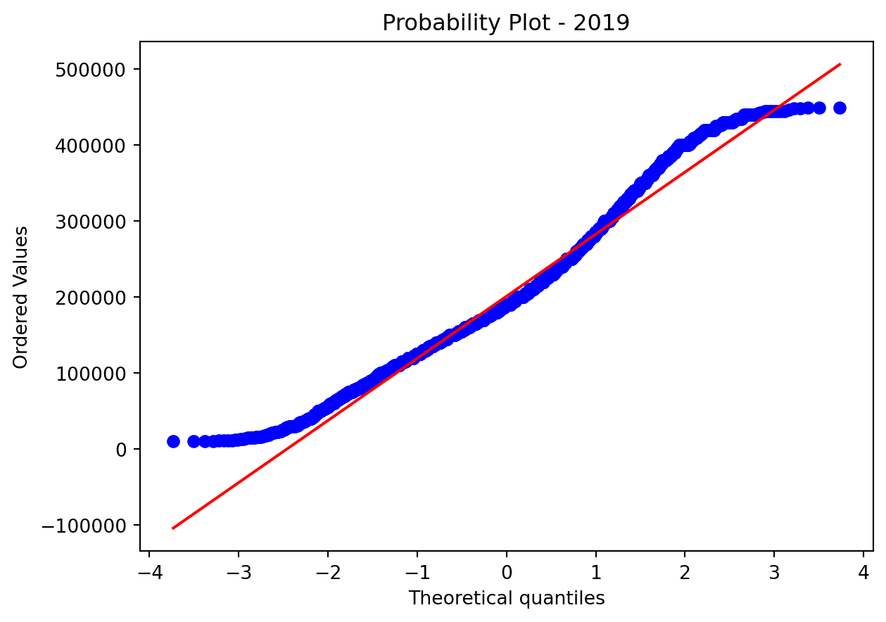

Data Science and Stem Salaries - How to land in a high Paying jobs
1 Introduction
Information technology is unquestionably one of the most rapidly increasing fields. According to the US Bureau of Labor Statistics, the IT industry is predicted to rise by 13% between 2020 and 2030. This is quicker than the average for all jobs, with computer and IT occupations earning more than twice as much as other occupations. A career in technology offers various advantages, one of which is a high compensation.
A young professional or recent graduate has various fascinating possibilities in the technology area to select from, such as Data Science courses, AI & ML courses, and so on. A profession in technology may be found in a variety of settings, including fast-paced startups, creative technological businesses, and tiny IT departments.
Our initiative is all about assisting recent graduates who are eager to enter the IT business by placing them in the highest-paying professions available and providing an approximate estimate of their wages depending on the criteria.
2 Description of the Data
This dataset is collected from Kaggle in order to explore Data Science and Stem Salaries.
Our original dataset has approximately 62,000 observations with 29 features.
There are some duplicates, null values and outliers in our dataset. After removing the duplicates, null values and outliers in our dataset we are left with 35973 observations.
We have considered the below mentioned features in our final dataset:
timestamp: When the data was recorded
company: Company name into which employee got selected
title: Jop title of the employee
yearlysalary: Amount of salary earned by the employee
location: Job location
yearsofexperience: Year of Experience
yearsatcompany: Years of experience at same company
gender: Male or Female
First of all, let’s look at whether the dependent variable, salary, has normality shape.
Our salary data has highly right-skewed distribution. We are going to remove null values and outliers.
Below is the histogram for salary data after removing NA Values, Duplicates and Outliers.
Now, the distribution is closer to normalization and we are able to analyze salary data.
3 Exploratory Data Analysis
3.1 Which job position has highest earning? Over time, salary by job title is changed?
In the dataset, there are total 15 unique titles:
['Software Engineer' 'Product Manager' 'Software Engineering Manager'
'Data Scientist' 'Solution Architect' 'Product Designer'
'Hardware Engineer' 'Recruiter' 'Mechanical Engineer' 'Business Analyst'
'Sales' 'Marketing' 'Technical Program Manager' 'Human Resources'
'Management Consultant']Software Engineer 24998
Product Manager 2451
Data Scientist 1590
Hardware Engineer 1254
Software Engineering Manager 1158
Product Designer 1031
Technical Program Manager 635
Management Consultant 552
Solution Architect 541
Business Analyst 481
Marketing 366
Mechanical Engineer 276
Recruiter 248
Sales 228
Human Resources 164
Name: title, dtype: int64 title yearlysalary
0 Business Analyst 121322.245
1 Data Scientist 186305.031
2 Hardware Engineer 188440.191
3 Human Resources 155957.317
4 Management Consultant 144972.826
5 Marketing 179163.934
6 Mechanical Engineer 148315.217
7 Product Designer 191018.429
8 Product Manager 208991.840
9 Recruiter 146435.484
10 Sales 180175.439
11 Software Engineer 182088.727
12 Software Engineering Manager 247124.352
13 Solution Architect 191090.573
14 Technical Program Manager 210755.906 Our dataset have the most Software Engineer about 70% and Software engineering manager has highest earning.
Let’s look at top 5 earner by each year.
| title | yearsofexperience | company | location | yearlysalary | |
|---|---|---|---|---|---|
| 555 | Software Engineer | 6.0 | Two Sigma | New York, NY | 440000 |
| 588 | Software Engineer | 7.0 | San Francisco, CA | 437000 | |
| 782 | Software Engineer | 14.0 | Seattle, WA | 435000 | |
| 26 | Data Scientist | 7.0 | Airbnb | San Francisco, CA | 430000 |
| 496 | Software Engineer | 5.0 | Netflix | Los Gatos, CA | 430000 |
In 2018, highest job positions are Software Engineer, Data Scientist, Software Engineering Manager. Apparent feature is the salary of software engineer who has 14 years work experience in WA is almost same with or a little bit lower than whom has less work experience in CA or NY.
| title | yearsofexperience | company | location | yearlysalary | |
|---|---|---|---|---|---|
| 791 | Product Manager | 7.0 | Lyft | San Francisco, CA | 449000 |
| 2597 | Software Engineer | 5.0 | Uber | Palo Alto, CA | 449000 |
| 3416 | Software Engineer | 10.0 | Mountain View, CA | 449000 | |
| 3114 | Software Engineer | 8.0 | Seattle, WA | 448000 | |
| 3268 | Software Engineer | 9.0 | Zurich, ZH, Switzerland | 448000 |
In 2019, highest job positions are Product Manager, Software Engineer, Software Engineering Manager. From 2019, overall salary is a little bit higher than 2018. Work experience is also differ from 5 to 10 years. This time, software engineer who is in Switzerland is ranked.
| title | yearsofexperience | company | location | yearlysalary | |
|---|---|---|---|---|---|
| 7552 | Software Engineer | 10.0 | Uber | Palo Alto, CA | 449000 |
| 8136 | Software Engineer | 15.0 | Menlo Park, CA | 449000 | |
| 5836 | Software Engineer | 5.0 | Square | San Francisco, CA | 448000 |
| 8607 | Software Engineering Manager | 12.0 | stubhub | San Francisco, CA | 448000 |
| 1039 | Hardware Engineer | 15.0 | Apple | Cupertino, CA | 447000 |
In 2020, highest job positions are Software Engineer, Software Engineering Manager, Hardware Engineer, Product Manager, Data Scientist. This year, work experience year is higher than previous years and all location is in CA.
| title | yearsofexperience | company | location | yearlysalary | |
|---|---|---|---|---|---|
| 7894 | Software Engineer | 9.0 | Twitch | San Francisco, CA | 449000 |
| 6367 | Software Engineer | 5.0 | Seattle, WA | 448000 | |
| 8366 | Software Engineer | 11.0 | ByteDance | Mountain View, CA | 446000 |
| 8566 | Software Engineer | 12.0 | Instacart | Toronto, ON, Canada | 446000 |
| 9206 | Software Engineering Manager | 9.0 | Amazon | Seattle, WA | 446000 |
In 2021, highest job positions are Software Engineer, Software Engineering Manager, Data Scientist, Product Manager. This year, Software Engineer who is in WA, US and Canada is ranked.
From 2018 to 2021, job position such as Software Engineer, Software Engineering Manager, Data Scientist, Product Manager, Hardware Engineer made highly earning. But, we can conclude that job title is not only factor to earn more money.
3.1.1 ANOVA for Job Position by Each Year
We implemented an ANOVA to investigate whether the average salary for each job position changes over year.
First, ANOVA for Software Engineer.
H₀: Year by year salary means of software engineer are equal
H₁: Year by year salary means of software engineer are not equal
| SS | df | MS | F | P-value | F crit | |
|---|---|---|---|---|---|---|
| Source of Variation | ||||||
| Between Groups | 3566078446040.637 | 3 | 1188692815346.879 | 155.705 | 0.0 | 3.117 |
| Within Groups | 190810271741827.062 | 24994 | 7634243088.014 | |||
| Total | 194376350187867.688 | 24997 | 7775987125.97 |
The p-value approach to hypothesis testing in the decision rule
F-score is: 155.70539235423766 and p value is: 1.1102230246251565e-16
Null Hypothesis is rejected.As a result, year by year salary means of Software Engineer are not equal.
Second, ANOVA for Software Engineering Manager.
H₀: Year by year salary means of Software Engineering Manager are equal
H₁: Year by year salary means of Software Engineering Manager are not equal
| SS | df | MS | F | P-value | F crit | |
|---|---|---|---|---|---|---|
| Source of Variation | ||||||
| Between Groups | 149030566249.522 | 3 | 49676855416.507 | 5.192 | 0.001 | 3.127 |
| Within Groups | 11040925527014.727 | 1154 | 9567526453.219 | |||
| Total | 11189956093264.248 | 1157 | 9671526441.888 |
The p-value approach to hypothesis testing in the decision rule
F-score is: 5.192236014126059 and p value is: 0.0014497189297676405
Null Hypothesis is rejected.As a result, year by year salary means of Software Engineering Manager are not equal.
Third, ANOVA for Data Scientist.
H₀: Year by year salary means of Data Scientist are equal
H₁: Year by year salary means of Data Scientist are not equal
| SS | df | MS | F | P-value | F crit | |
|---|---|---|---|---|---|---|
| Source of Variation | ||||||
| Between Groups | 94194251542.308 | 3 | 31398083847.436 | 4.619 | 0.003 | 3.124 |
| Within Groups | 10781086808206.121 | 1586 | 6797658769.361 | |||
| Total | 10875281059748.43 | 1589 | 6844103876.494 |
The p-value approach to hypothesis testing in the decision rule
F-score is: 4.618955571726775 and p value is: 0.003188886046185724
Null Hypothesis is rejected.As a result, year by year salary means of Data Scientist are not equal.
Fourth, ANOVA for Product Manager.
H₀: Year by year salary means of Product Manager are equal
H₁: Year by year salary means of Product Manager are not equal
| SS | df | MS | F | P-value | F crit | |
|---|---|---|---|---|---|---|
| Source of Variation | ||||||
| Between Groups | 112568730874.316 | 3 | 37522910291.439 | 5.166 | 0.001 | 3.121 |
| Within Groups | 17773853105926.992 | 2447 | 7263528036.75 | |||
| Total | 17886421836801.309 | 2450 | 7300580341.552 |
The p-value approach to hypothesis testing in the decision rule
F-score is: 5.165934529555198 and p value is: 0.0014683665224930476
Null Hypothesis is rejected.As a reuslt, year by year salary means of Product Manager are not equal.
Last, ANOVA for Hardware Engineer.
H₀: Year by year salary means of Hardware Engineer are equal
H₁: Year by year salary means of Hardware Engineer are not equal
| SS | df | MS | F | P-value | F crit | |
|---|---|---|---|---|---|---|
| Source of Variation | ||||||
| Between Groups | 156305235199.977 | 3 | 52101745066.659 | 7.983 | 0.0 | 3.127 |
| Within Groups | 8158077779154.092 | 1250 | 6526462223.323 | |||
| Total | 8314383014354.069 | 1253 | 6635581017.042 |
The p-value approach to hypothesis testing in the decision rule
F-score is: 7.983152783826113 and p value is: 2.8408647506306117e-05
Null Hypothesis is rejected.As a result, year by year salary means of Hardware Engineer are not equal.
According to ANOVA, the salary by title over time is statistically significant, which means salary over time per each job position is not equal.
3.2 How large is the wage disparity between gender?
According to box plot for gender, it looks there is apparent difference beween average salary for gender. But to make sure, let’s look at the ANOVA for gender.
H₀: Salary by gender are equal
H₁: Salary by gender are not equal
| SS | df | MS | F | P-value | F crit | |
|---|---|---|---|---|---|---|
| Source of Variation | ||||||
| Between Groups | 163899537557.229 | 2 | 81949768778.615 | 10.577 | 0.0 | 3.689 |
| Within Groups | 278691537628696.812 | 35969 | 7748103578.879 | |||
| Total | 278855437166254.031 | 35972 | 7752013709.726 |
The p-value approach to hypothesis testing in the decision rule
F-score is: 10.576751839250923 and p value is: 2.5581453431011703e-05
Null Hypothesis is rejected.As a result, the salary by gender are not equal which means that average salary by gender is statistically significant.
3.3 Is there a significant difference between the yearly salary in top 10 companies and the yearly salary in not-top-10 companies?
Overall, there are 1435 different companies in this dataset. Based on the rank on Fortune 500 (2022), we divided the companies into two groups:
* Top 10 companies:
Apple, Walmart Labs, Walmart, Amazon, CVS health, UnitedHealth Group, ExxonMobil, and McKesson
* Not-top-10 companies:
Yahoo, Netflix, Uber, Dell Technologies, Zillow, Airbnb, Cisco, JPMorgan Chase….
3.3.1 Distribution of Yearly Salary for Top 10 companies and Not-top-10 companies
First, we divided the data in to two groups. Next, we add a new boolean column called “topcompany”. If the company is in Top 10 companies shows 1, if not shows 0.
The violinplot above shows the distribution of the two groups. Obviously, the distribution is different. The TOP 10 Companies’ Yearly Salary is likely higher than Not-Top-10 Companies’.
3.3.2 Independent-Sample T Test
H0: The means for the two populations are equal
H1: The means for the two populations are not equal
Variable N Mean SD SE 95% Conf. Interval
0 top10 6063.0 212370.938 80553.228 1034.521 210342.910 214398.967
1 not10 29910.0 179779.338 88483.127 511.626 178776.530 180782.147
2 combined 35973.0 185272.427 88045.521 464.215 184362.552 186182.302
Independent t-test results
0 Difference (top10 - not10) = 32591.600
1 Degrees of freedom = 35971.000
2 t = 26.538
3 Two side test p value = 0.000
4 Difference < 0 p value = 1.000
5 Difference > 0 p value = 0.000
6 Cohen's d = 0.374
7 Hedge's g = 0.374
8 Glass's delta1 = 0.405
9 Point-Biserial r = 0.139By the Independent-Sample T Test, we can find out whether the means for the two groups are equal or not. The result shows that the mean yearlysalary for top 10 companies is 212,371 USD, was significantly higher than the mean yearlysalary of not-top-10 companies, which is 179779 USD. Also, because the p-value < 0.05, we can conclude that the means for the two groups are not equal.
3.4 Is working for more years in the same company affect the salary?
We usually think our colleagues who join the company for more years get higher salaries, but let’s see what this dataset showed.
3.4.1 Distribution of yeas at company
The distribution of years at company shows that most of people in this dataset had only been in their companies for 0 to 8 years. The median is 2 years.
3.4.2 Scatterplot & Linear Regression Fit Line
According to the scatterplot, there’s no linear relationship between Yearly Salary and Years at Company.
3.4.3 Pearson’s correlation between two variables
Pearsons correlation: 0.099The result of Pearson’s correlation shows that the strength of the relationship between the two variables was Very Weak. So we can conclude that working in the same company for more years does not mean those people have higher salaries.
3.5 In the recent four years, the average salary keeps the same?
Because of COVID-19, the global economy has changed dramatically. We will use statistic test to analyse if the yearly salary keeps the same in recent 4 years.
3.5.1 Distribution of yearly salary by time stamp
From the violinplot, we can see there’s a little drop in 2021.
3.5.2 Q-Q Plot (Normality Assumption Check)

Before we did the hypothesis test, we checked the distribution by Q-Q plot. From the figures, we may assume that the data for each group falls roughly on a straight line.
3.5.3 ANOVA Test
H₀: μ1= μ2 = μ3 = μ4
H₁: Not all yearlysalary means are equal
| SS | df | MS | F | P-value | F crit | |
|---|---|---|---|---|---|---|
| Source of Variation | ||||||
| Between Groups | 4549359324285.643 | 3 | 1516453108095.214 | 198.848 | 0.0 | 3.116 |
| Within Groups | 274306077841968.0 | 35969 | 7626180261.947 | |||
| Total | 278855437166253.656 | 35972 | 7752013709.726 |
The p-value approach to hypothesis testing in the decision rule
F-score is: 198.84831672049629 and p value is: 1.1102230246251565e-16
Null Hypothesis is rejected.Based on the result, the p-value < 0.05, so the null hypothesis is rejected. Not all yearly salary means are equal.
3.6 How much do the employee’s experience affect his or her salary?
There are lot of fluctuations in the salary of employees in the initial 8-9 years, because of some reasons like constant shifting companies and less salaries in the career beginning and have a constant growth in the salary after that.
Pearson’s Correlation Matrix:
Pearson’s correlation is utilized when you have two quantitative variables and you wish to see if there is a linear relationship between those variables.
The three possible research hypotheses state whether or not there is a linear relationship between the two variables. 1) The variables are positively correlated (as one variable gets larger so does the other), 2) The variables are negatively correlated (as one variable gets larger the other gets smaller), 3) The variables are not correlated (there is no relationship between the two variables).ter that.
| yearsofexperience | yearsatcompany | yearlysalary | topcompany | |
|---|---|---|---|---|
| yearsofexperience | 1.000 | 0.416 | 0.362 | 0.043 |
| yearsatcompany | 0.416 | 1.000 | 0.099 | -0.005 |
| yearlysalary | 0.362 | 0.099 | 1.000 | 0.137 |
| topcompany | 0.043 | -0.005 | 0.137 | 1.000 |
yearsofexperience yearsatcompany yearlysalary topcompany
yearsofexperience 1.000 0.416 0.362 0.043
yearsatcompany 0.416 1.000 0.099 -0.005
yearlysalary 0.362 0.099 1.000 0.137
topcompany 0.043 -0.005 0.137 1.000 The correlation between yearlysalary and yearsofexperiecne is 0.36 which means that both the variables are moderatel correlated to each other.
4 Feature Engineering:
Feature engineering is a machine learning approach that uses data to generate new variables that were not included in the training set. It can develop new features for both supervised and unsupervised learning, with the objective of simplifying and speeding up data transformations while simultaneously boosting model correctness.
The process of designing artificial features into an algorithm is referred to as feature engineering. These fake traits are then employed by the algorithm to increase its performance, or to yield better results. Data scientists spend the majority of their time working with data, thus accuracy is critical.
When feature engineering operations are carried out appropriately, the final dataset is optimum and contains all of the relevant aspects influencing the business challenge. As a consequence of these datasets, the most accurate prediction models and the most relevant insights are created.
4.1 Creating Dummy Variables using One Hot Encoding for Company and Location Features
One Hot Encoding
One hot encoding can be defined as the important process of changing the categorical data variables to be delivered to machine and deep learning algorithms which in turn increase predictions as well as classification accuracy of a model.
Checking for Unique Variables
timestamp : 4
company : 1435
title : 15
yearsofexperience : 34
yearsatcompany : 52
gender : 3
location : 881
yearlysalary : 451
topcompany : 2Considering the top 20 companies of Multicategorical Feature Company
Amazon 4494
Microsoft 2820
Google 2425
Facebook 1608
Apple 1195
Oracle 596
Salesforce 560
IBM 548
Intel 505
Cisco 502
Capital One 498
Uber 481
VMware 384
LinkedIn 363
JPMorgan Chase 344
Goldman Sachs 303
Qualcomm 298
Intuit 285
Bloomberg 277
PayPal 274
Name: company, dtype: int64Creating an array of top 20 companies names
['Amazon',
'Microsoft',
'Google',
'Facebook',
'Apple',
'Oracle',
'Salesforce',
'IBM',
'Intel',
'Cisco',
'Capital One',
'Uber',
'VMware',
'LinkedIn',
'JPMorgan Chase',
'Goldman Sachs',
'Qualcomm',
'Intuit',
'Bloomberg',
'PayPal']Function for performing one hot encoding
| timestamp | company | title | yearsofexperience | yearsatcompany | gender | location | yearlysalary | topcompany | company_Amazon | company_Microsoft | company_Google | company_Facebook | company_Apple | company_Oracle | company_Salesforce | company_IBM | company_Intel | company_Cisco | company_Capital One | company_Uber | company_VMware | company_LinkedIn | company_JPMorgan Chase | company_Goldman Sachs | company_Qualcomm | company_Intuit | company_Bloomberg | company_PayPal | |
|---|---|---|---|---|---|---|---|---|---|---|---|---|---|---|---|---|---|---|---|---|---|---|---|---|---|---|---|---|---|
| 264 | 2018 | GE Digital | Software Engineer | 4.0 | 4.0 | Male | San Ramon, CA | 140000 | 0 | 0 | 0 | 0 | 0 | 0 | 0 | 0 | 0 | 0 | 0 | 0 | 0 | 0 | 0 | 0 | 0 | 0 | 0 | 0 | 0 |
| 265 | 2018 | Amazon | Software Engineer | 12.0 | 2.0 | Male | Seattle, WA | 172000 | 1 | 1 | 0 | 0 | 0 | 0 | 0 | 0 | 0 | 0 | 0 | 0 | 0 | 0 | 0 | 0 | 0 | 0 | 0 | 0 | 0 |
| 266 | 2018 | Uber | Software Engineer | 7.0 | 2.0 | Male | San Francisco, CA | 325000 | 0 | 0 | 0 | 0 | 0 | 0 | 0 | 0 | 0 | 0 | 0 | 0 | 1 | 0 | 0 | 0 | 0 | 0 | 0 | 0 | 0 |
| 269 | 2018 | Microsoft | Software Engineer | 4.0 | 0.0 | Male | Seattle, WA | 150000 | 0 | 0 | 1 | 0 | 0 | 0 | 0 | 0 | 0 | 0 | 0 | 0 | 0 | 0 | 0 | 0 | 0 | 0 | 0 | 0 | 0 |
| 271 | 2018 | Toyota Research Institute | Software Engineer | 0.0 | 0.0 | Male | Boston, MA | 189000 | 0 | 0 | 0 | 0 | 0 | 0 | 0 | 0 | 0 | 0 | 0 | 0 | 0 | 0 | 0 | 0 | 0 | 0 | 0 | 0 | 0 |
4.2 Creating Dummy Variables using pandas get_dummies function for gender, timestamp, title features
Get_dummies Pandas get_dummies() is used for data manipulation. It converts categorical data into dummy or indicator variables. A dummy or indicator variable can have a value of 0 or 1.
| company | yearsofexperience | yearsatcompany | location | yearlysalary | topcompany | company_Amazon | company_Microsoft | company_Google | company_Facebook | company_Apple | company_Oracle | company_Salesforce | company_IBM | company_Intel | company_Cisco | company_CapitalOne | company_Uber | company_VMware | company_LinkedIn | company_JPMorganChase | company_GoldmanSachs | company_Qualcomm | company_Intuit | company_Bloomberg | company_PayPal | location_Seattle_WA | location_SanFrancisco_CA | location_NewYork_NY | location_Redmond_WA | location_Sunnyvale_CA | location_MountainView_CA | location_SanJose_CA | location_Austin_TX | location_Bangalore_KA_India | location_Cupertino_CA | location_MenloPark_CA | location_Boston_MA | location_London_EN_UnitedKingdom | location_SantaClara_CA | location_PaloAlto_CA | location_Chicago_IL | location_SanDiego_CA | location_Toronto_ON_Canada | location_Bellevue_WA | location_Bengaluru_KA_India | gender_Female | gender_Male | gender_Other | timestamp_2018 | timestamp_2019 | timestamp_2020 | timestamp_2021 | title_BusinessAnalyst | title_DataScientist | title_HardwareEngineer | title_HumanResources | title_ManagementConsultant | title_Marketing | title_MechanicalEngineer | title_ProductDesigner | title_ProductManager | title_Recruiter | title_Sales | title_SoftwareEngineer | title_SoftwareEngineeringManager | title_SolutionArchitect | title_TechnicalProgramManager | |
|---|---|---|---|---|---|---|---|---|---|---|---|---|---|---|---|---|---|---|---|---|---|---|---|---|---|---|---|---|---|---|---|---|---|---|---|---|---|---|---|---|---|---|---|---|---|---|---|---|---|---|---|---|---|---|---|---|---|---|---|---|---|---|---|---|---|---|---|---|
| 264 | GE Digital | 4.0 | 4.0 | San Ramon, CA | 140000 | 0 | 0 | 0 | 0 | 0 | 0 | 0 | 0 | 0 | 0 | 0 | 0 | 0 | 0 | 0 | 0 | 0 | 0 | 0 | 0 | 0 | 0 | 0 | 0 | 0 | 0 | 0 | 0 | 0 | 0 | 0 | 0 | 0 | 0 | 0 | 0 | 0 | 0 | 0 | 0 | 0 | 0 | 1 | 0 | 1 | 0 | 0 | 0 | 0 | 0 | 0 | 0 | 0 | 0 | 0 | 0 | 0 | 0 | 0 | 1 | 0 | 0 | 0 |
| 265 | Amazon | 12.0 | 2.0 | Seattle, WA | 172000 | 1 | 1 | 0 | 0 | 0 | 0 | 0 | 0 | 0 | 0 | 0 | 0 | 0 | 0 | 0 | 0 | 0 | 0 | 0 | 0 | 0 | 1 | 0 | 0 | 0 | 0 | 0 | 0 | 0 | 0 | 0 | 0 | 0 | 0 | 0 | 0 | 0 | 0 | 0 | 0 | 0 | 0 | 1 | 0 | 1 | 0 | 0 | 0 | 0 | 0 | 0 | 0 | 0 | 0 | 0 | 0 | 0 | 0 | 0 | 1 | 0 | 0 | 0 |
| 266 | Uber | 7.0 | 2.0 | San Francisco, CA | 325000 | 0 | 0 | 0 | 0 | 0 | 0 | 0 | 0 | 0 | 0 | 0 | 0 | 1 | 0 | 0 | 0 | 0 | 0 | 0 | 0 | 0 | 0 | 1 | 0 | 0 | 0 | 0 | 0 | 0 | 0 | 0 | 0 | 0 | 0 | 0 | 0 | 0 | 0 | 0 | 0 | 0 | 0 | 1 | 0 | 1 | 0 | 0 | 0 | 0 | 0 | 0 | 0 | 0 | 0 | 0 | 0 | 0 | 0 | 0 | 1 | 0 | 0 | 0 |
| 269 | Microsoft | 4.0 | 0.0 | Seattle, WA | 150000 | 0 | 0 | 1 | 0 | 0 | 0 | 0 | 0 | 0 | 0 | 0 | 0 | 0 | 0 | 0 | 0 | 0 | 0 | 0 | 0 | 0 | 1 | 0 | 0 | 0 | 0 | 0 | 0 | 0 | 0 | 0 | 0 | 0 | 0 | 0 | 0 | 0 | 0 | 0 | 0 | 0 | 0 | 1 | 0 | 1 | 0 | 0 | 0 | 0 | 0 | 0 | 0 | 0 | 0 | 0 | 0 | 0 | 0 | 0 | 1 | 0 | 0 | 0 |
| 271 | Toyota Research Institute | 0.0 | 0.0 | Boston, MA | 189000 | 0 | 0 | 0 | 0 | 0 | 0 | 0 | 0 | 0 | 0 | 0 | 0 | 0 | 0 | 0 | 0 | 0 | 0 | 0 | 0 | 0 | 0 | 0 | 0 | 0 | 0 | 0 | 0 | 0 | 0 | 0 | 0 | 1 | 0 | 0 | 0 | 0 | 0 | 0 | 0 | 0 | 0 | 1 | 0 | 1 | 0 | 0 | 0 | 0 | 0 | 0 | 0 | 0 | 0 | 0 | 0 | 0 | 0 | 0 | 1 | 0 | 0 | 0 |
5 Predictive Analysis
Linear Regression
Linear regression is a technique that offers a linear connection between an independent variable and a dependent variable to predict the outcome of future events. It is a statistical approach used in data science and machine learning for predictive analysis.
5.1 Linear Regression Model
LinearRegression()Metrics of Linear Regression
Mean Squared Error of Linear Regression : 3720132217.54107
R Square value of Linear Regression : 0.51675
The Training R Square value is: 0.523208
The Testing R Square value is: 0.516748Intercepts and Coefficients of Linear Regression
Intercepts of Linear Regression: [9.30521493e+15]
Coefficients of Linear Regression: [[ 7.77632999e+03 2.05349432e+04 1.05285189e+03 5.66750252e+04
7.96565132e+04 4.27457092e+04 1.07570858e+04 1.70985169e+04
-2.79622353e+04 -4.85523580e+03 -1.24634867e+04 -3.04386214e+03
4.46287667e+04 -3.22727871e+03 5.18770784e+04 -2.72881428e+04
5.64864689e+03 -1.16173942e+03 4.49538860e+03 1.71073165e+04
7.82802209e+03 7.08776706e+04 9.76042036e+04 6.55635467e+04
5.93289430e+04 7.62306464e+04 8.61596794e+04 6.93799052e+04
2.50941286e+04 -8.41816103e+04 8.14715582e+04 7.39748634e+04
4.40648955e+04 -3.88759157e+03 7.19838145e+04 9.00523040e+04
2.93531729e+04 3.71947648e+04 -1.37265884e+03 6.53120253e+04
-8.27242936e+04 -7.79303524e+15 -7.79303524e+15 -7.79303524e+15
-2.58686356e+14 -2.58686356e+14 -2.58686356e+14 -2.58686356e+14
-1.25349334e+15 -1.25349334e+15 -1.25349334e+15 -1.25349334e+15
-1.25349334e+15 -1.25349334e+15 -1.25349334e+15 -1.25349334e+15
-1.25349334e+15 -1.25349334e+15 -1.25349334e+15 -1.25349334e+15
-1.25349334e+15 -1.25349334e+15 -1.25349334e+15]]Summary of OLS StatModels
| Dep. Variable: | yearlysalary | R-squared: | 0.522 |
|---|---|---|---|
| Model: | OLS | Adj. R-squared: | 0.521 |
| Method: | Least Squares | F-statistic: | 653.9 |
| Date: | Tue, 20 Dec 2022 | Prob (F-statistic): | 0.00 |
| Time: | 18:05:03 | Log-Likelihood: | -4.4734e+05 |
| No. Observations: | 35973 | AIC: | 8.948e+05 |
| Df Residuals: | 35912 | BIC: | 8.953e+05 |
| Df Model: | 60 | ||
| Covariance Type: | nonrobust |
| coef | std err | t | P>|t| | [0.025 | 0.975] | |
|---|---|---|---|---|---|---|
| Intercept | 4.556e+04 | 964.190 | 47.257 | 0.000 | 4.37e+04 | 4.75e+04 |
| yearsofexperience | 7794.3770 | 82.331 | 94.671 | 0.000 | 7633.005 | 7955.749 |
| company_Amazon | 2.098e+04 | 1139.233 | 18.416 | 0.000 | 1.87e+04 | 2.32e+04 |
| company_Microsoft | 531.2986 | 1675.102 | 0.317 | 0.751 | -2751.952 | 3814.549 |
| company_Google | 5.597e+04 | 1474.350 | 37.961 | 0.000 | 5.31e+04 | 5.89e+04 |
| company_Facebook | 7.835e+04 | 2094.699 | 37.404 | 0.000 | 7.42e+04 | 8.25e+04 |
| company_Apple | 4.209e+04 | 3070.410 | 13.710 | 0.000 | 3.61e+04 | 4.81e+04 |
| company_Oracle | 9606.8961 | 2565.426 | 3.745 | 0.000 | 4578.584 | 1.46e+04 |
| company_Salesforce | 1.67e+04 | 2665.495 | 6.267 | 0.000 | 1.15e+04 | 2.19e+04 |
| company_IBM | -2.664e+04 | 2674.330 | -9.962 | 0.000 | -3.19e+04 | -2.14e+04 |
| company_Intel | -4936.1787 | 2890.221 | -1.708 | 0.088 | -1.06e+04 | 728.742 |
| company_Cisco | -1.251e+04 | 2934.978 | -4.263 | 0.000 | -1.83e+04 | -6758.412 |
| company_CapitalOne | -3132.3086 | 2788.390 | -1.123 | 0.261 | -8597.636 | 2333.019 |
| company_Uber | 4.779e+04 | 2862.536 | 16.695 | 0.000 | 4.22e+04 | 5.34e+04 |
| company_VMware | -3614.3919 | 3444.831 | -1.049 | 0.294 | -1.04e+04 | 3137.580 |
| company_LinkedIn | 5.267e+04 | 3387.475 | 15.550 | 0.000 | 4.6e+04 | 5.93e+04 |
| company_JPMorganChase | -2.487e+04 | 3334.744 | -7.459 | 0.000 | -3.14e+04 | -1.83e+04 |
| company_GoldmanSachs | 6079.2431 | 3595.533 | 1.691 | 0.091 | -968.109 | 1.31e+04 |
| company_Qualcomm | 37.1988 | 4314.263 | 0.009 | 0.993 | -8418.887 | 8493.284 |
| company_Intuit | 4810.8168 | 3915.351 | 1.229 | 0.219 | -2863.388 | 1.25e+04 |
| company_Bloomberg | 1.94e+04 | 3834.538 | 5.059 | 0.000 | 1.19e+04 | 2.69e+04 |
| company_PayPal | 8102.8021 | 3845.502 | 2.107 | 0.035 | 565.503 | 1.56e+04 |
| location_Seattle_WA | 7.038e+04 | 1190.132 | 59.134 | 0.000 | 6.8e+04 | 7.27e+04 |
| location_SanFrancisco_CA | 9.726e+04 | 1218.057 | 79.845 | 0.000 | 9.49e+04 | 9.96e+04 |
| location_NewYork_NY | 6.45e+04 | 1394.145 | 46.264 | 0.000 | 6.18e+04 | 6.72e+04 |
| location_Redmond_WA | 6e+04 | 2332.616 | 25.722 | 0.000 | 5.54e+04 | 6.46e+04 |
| location_Sunnyvale_CA | 7.732e+04 | 1944.145 | 39.771 | 0.000 | 7.35e+04 | 8.11e+04 |
| location_MountainView_CA | 8.555e+04 | 2137.443 | 40.026 | 0.000 | 8.14e+04 | 8.97e+04 |
| location_SanJose_CA | 6.758e+04 | 2103.163 | 32.131 | 0.000 | 6.35e+04 | 7.17e+04 |
| location_Austin_TX | 2.504e+04 | 2104.563 | 11.896 | 0.000 | 2.09e+04 | 2.92e+04 |
| location_Bangalore_KA_India | -8.392e+04 | 2169.642 | -38.678 | 0.000 | -8.82e+04 | -7.97e+04 |
| location_Cupertino_CA | 8.165e+04 | 3650.987 | 22.363 | 0.000 | 7.45e+04 | 8.88e+04 |
| location_MenloPark_CA | 7.607e+04 | 3033.903 | 25.072 | 0.000 | 7.01e+04 | 8.2e+04 |
| location_Boston_MA | 4.291e+04 | 2357.284 | 18.204 | 0.000 | 3.83e+04 | 4.75e+04 |
| location_London_EN_UnitedKingdom | -3333.8435 | 2441.872 | -1.365 | 0.172 | -8119.986 | 1452.299 |
| location_SantaClara_CA | 7.436e+04 | 2507.687 | 29.654 | 0.000 | 6.94e+04 | 7.93e+04 |
| location_PaloAlto_CA | 8.787e+04 | 2703.068 | 32.507 | 0.000 | 8.26e+04 | 9.32e+04 |
| location_Chicago_IL | 2.724e+04 | 2848.663 | 9.562 | 0.000 | 2.17e+04 | 3.28e+04 |
| location_SanDiego_CA | 3.719e+04 | 3536.862 | 10.514 | 0.000 | 3.03e+04 | 4.41e+04 |
| location_Toronto_ON_Canada | 442.6889 | 2925.841 | 0.151 | 0.880 | -5292.048 | 6177.425 |
| location_Bellevue_WA | 6.328e+04 | 3128.605 | 20.226 | 0.000 | 5.71e+04 | 6.94e+04 |
| location_Bengaluru_KA_India | -8.197e+04 | 3127.862 | -26.206 | 0.000 | -8.81e+04 | -7.58e+04 |
| gender_Female | 7989.8513 | 1077.031 | 7.418 | 0.000 | 5878.838 | 1.01e+04 |
| gender_Male | 1.243e+04 | 982.248 | 12.655 | 0.000 | 1.05e+04 | 1.44e+04 |
| gender_Other | 2.514e+04 | 2441.997 | 10.297 | 0.000 | 2.04e+04 | 2.99e+04 |
| timestamp_2018 | 9051.8524 | 1447.479 | 6.254 | 0.000 | 6214.751 | 1.19e+04 |
| timestamp_2019 | 1.159e+04 | 741.855 | 15.623 | 0.000 | 1.01e+04 | 1.3e+04 |
| timestamp_2020 | 1.164e+04 | 617.566 | 18.846 | 0.000 | 1.04e+04 | 1.28e+04 |
| timestamp_2021 | 1.328e+04 | 630.288 | 21.076 | 0.000 | 1.2e+04 | 1.45e+04 |
| title_BusinessAnalyst | -2.804e+04 | 2696.219 | -10.399 | 0.000 | -3.33e+04 | -2.28e+04 |
| title_DataScientist | 2.675e+04 | 1608.748 | 16.625 | 0.000 | 2.36e+04 | 2.99e+04 |
| title_HardwareEngineer | 1.608e+04 | 1886.285 | 8.524 | 0.000 | 1.24e+04 | 1.98e+04 |
| title_HumanResources | -3.324e+04 | 4510.411 | -7.370 | 0.000 | -4.21e+04 | -2.44e+04 |
| title_ManagementConsultant | 165.0858 | 2550.837 | 0.065 | 0.948 | -4834.631 | 5164.803 |
| title_Marketing | -1.92e+04 | 3068.771 | -6.255 | 0.000 | -2.52e+04 | -1.32e+04 |
| title_MechanicalEngineer | -2472.4136 | 3516.705 | -0.703 | 0.482 | -9365.261 | 4420.434 |
| title_ProductDesigner | 4384.2784 | 1919.656 | 2.284 | 0.022 | 621.694 | 8146.862 |
| title_ProductManager | 2.44e+04 | 1359.056 | 17.952 | 0.000 | 2.17e+04 | 2.71e+04 |
| title_Recruiter | -4.449e+04 | 3700.050 | -12.024 | 0.000 | -5.17e+04 | -3.72e+04 |
| title_Sales | 1.503e+04 | 3845.443 | 3.908 | 0.000 | 7490.150 | 2.26e+04 |
| title_SoftwareEngineer | 2.119e+04 | 822.519 | 25.760 | 0.000 | 1.96e+04 | 2.28e+04 |
| title_SoftwareEngineeringManager | 5.098e+04 | 1857.286 | 27.446 | 0.000 | 4.73e+04 | 5.46e+04 |
| title_SolutionArchitect | 1.561e+04 | 2575.281 | 6.061 | 0.000 | 1.06e+04 | 2.07e+04 |
| title_TechnicalProgramManager | -1565.7442 | 2388.520 | -0.656 | 0.512 | -6247.315 | 3115.827 |
| Omnibus: | 4371.163 | Durbin-Watson: | 1.980 |
|---|---|---|---|
| Prob(Omnibus): | 0.000 | Jarque-Bera (JB): | 8136.930 |
| Skew: | 0.798 | Prob(JB): | 0.00 |
| Kurtosis: | 4.698 | Cond. No. | 1.23e+16 |
Notes:
[1] Standard Errors assume that the covariance matrix of the errors is correctly specified.
[2] The smallest eigenvalue is 1.26e-26. This might indicate that there are
strong multicollinearity problems or that the design matrix is singular.
5.2 Random Forest Regression Model
Random Forest Regression
Random Forest Regression is a supervised learning technique that does regression using the ensemble learning method. Ensemble learning method is a methodology that integrates predictions from numerous machine learning algorithms to generate a more accurate forecast than a single model. Each tree is built from a separate set of rows, and a new set of characteristics is chosen for splitting at each node. Each of the trees provides a unique forecast. These forecasts are then averaged to get a single outcome.
RandomForestRegressor(random_state=0)Metrics of Random Forest Regression
Mean Squared Error of Random Forest Regression: 2299991475.35531
R Square value of Random Forest Regression: 0.703296The Training R Square value is: 0.704008The Testing R Square value is: 0.700422After comparing the rsquare values of both Linear and Random Forest Regression, we got to know that the Random forest model is better model for this dataset.
6 Conclusion
- The means salary of each job position is different from each other.
- The average salary of gender is not equal
- The average yearly salary in the US top 10 companies was higher than not-top-10 companies’ average yearly salary
- Working in the same company for more years does not mean those people have higher salaries
- The means of yearly salary from 2018 to 2021 are not equal
- Yearly salary won’t affect much by years of experience.
- Random Forest Regression is a better model with high R Square when compared to the Linear Regression
7 Reference
Ogozaly, J. (2021, October 10). Data Science and STEM salaries. Kaggle. Retrieved December 20, 2022, from https://www.kaggle.com/datasets/jackogozaly/data-science-and-stem-salaries?resource=download
Fortune 500. (2022, December 16). Fortune. https://fortune.com/ranking/fortune500/